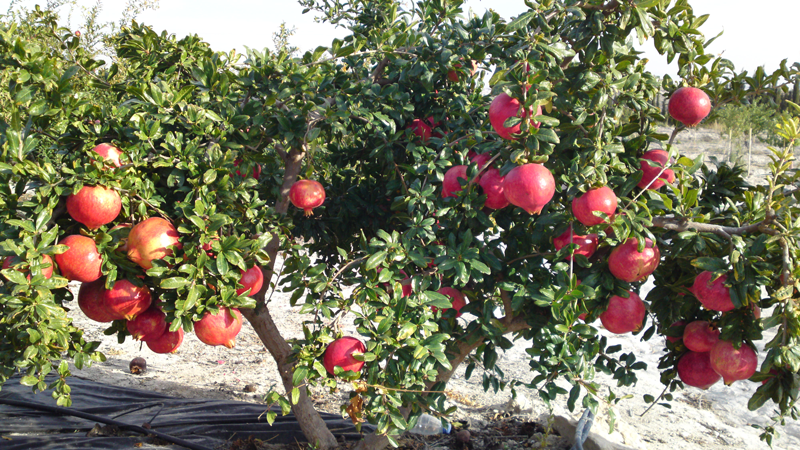

Ayuntamiento de Senés
JARDIN BOTANICO DE ESPECIES AUTOCTONAS DE SENES

Punica granatum

El granado (Punica granatum) es un árbol pequeño o arbusto caducifolio muy característico del ámbito mediterráneo, apreciado tanto por su valor ornamental como por sus frutos.
Presenta un tronco irregular y ramificado, con ramas a menudo espinosas. Sus hojas son pequeñas, brillantes y de color verde intenso. Destaca por sus flores de color rojo anaranjado, muy vistosas, que dan lugar a la granada, un fruto globoso con numerosas semillas jugosas en su interior.
El granado es originario de Asia occidental, pero se encuentra ampliamente cultivado en la región mediterránea. Prefiere climas cálidos y suelos bien drenados.
En el entorno de Senés, es habitual en huertos y jardines, formando parte del paisaje agrícola tradicional.
La granada es un fruto muy rico en antioxidantes, vitaminas y minerales. Tiene propiedades beneficiosas para la salud cardiovascular y el sistema inmunológico.
También ha sido utilizada tradicionalmente por sus propiedades digestivas y antiinflamatorias.
El granado simboliza la fertilidad, la abundancia y la vida. Su fruto, lleno de semillas, ha sido considerado símbolo de prosperidad en muchas culturas.
También representa la unión y la continuidad.
En Senés, se denomina "granao", ha sido cultivado en huertos familiares, siendo apreciado para poder tener fruta en invierno. Muy típico de las matanzas eran las ensaladas de belza con graná.
Se utilizaba la corteza y la raiz contra la tenia o solitaria, en decocción para diarreas, enjuagues de la garganta y boca. Tambien se utilizaba dicha corteza para fabricación de tintes.
El granado florece en primavera y principios de verano, mientras que la maduración de sus frutos se produce en otoño.
La granada ha sido un símbolo importante en muchas culturas antiguas, asociada a la vida y la fertilidad.
Es un fruto muy valorado tanto por su sabor como por sus beneficios para la salud.